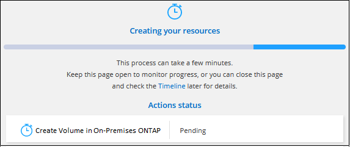

要求變更文件
要求變更文件 編輯此頁面
編輯此頁面 瞭解如何作出貢獻
瞭解如何作出貢獻管理內部ONTAP 部署的儲存設備
貢獻者
從ONTAP Cloud Manager探索內部使用的叢集之後、您可以開啟工作環境來配置和管理儲存設備。
建立磁碟區
Cloud Manager可讓您在現有的Aggregate上建立NFS或CIFS磁碟區。您無法ONTAP 從Cloud Manager在內部的叢集上建立新的Aggregate。
Cloud Manager功能稱為「範本」、可讓您針對特定應用程式（例如資料庫或串流服務）的工作負載需求、建立最佳化的磁碟區。如果您的組織已建立您應該使用的Volume範本、請遵循 這些步驟。
-
在「畫版」頁面上、按兩下您ONTAP 要在其中配置Volume的內部版位元組叢集名稱。
-
按一下「 * 新增 Volume * 」。
-
依照精靈中的步驟建立磁碟區。
-
詳細資料與保護：輸入磁碟區的基本詳細資料、然後選取Snapshot原則。
此頁面上的部分欄位是不知自明的。下列清單說明您可能需要指引的欄位：
欄位 說明 尺寸
您可以輸入的最大大小、主要取決於您是否啟用精簡配置、這可讓您建立比目前可用實體儲存容量更大的磁碟區。
Snapshot 原則
Snapshot 複製原則會指定自動建立的 NetApp Snapshot 複本的頻率和數量。NetApp Snapshot 複本是一種不影響效能的時間點檔案系統映像、需要最少的儲存容量。您可以選擇預設原則或無。您可以針對暫時性資料選擇「無」：例如、 Microsoft SQL Server 的 Tempdb 。
-
傳輸協定：選擇磁碟區的傳輸協定（NFS或CIFS）、然後設定磁碟區的存取控制或權限。
如果您選擇CIFS、但伺服器尚未設定、Cloud Manager會提示您使用Active Directory或工作群組來設定CIFS伺服器。
下列清單說明您可能需要指引的欄位：
欄位 說明 存取控制
NFS匯出原則會定義子網路中可存取磁碟區的用戶端。根據預設、 Cloud Manager 會輸入一個值、讓您存取子網路中的所有執行個體。
權限與使用者/群組
這些欄位可讓您控制使用者和群組存取SMB共用區的層級（也稱為存取控制清單或ACL）。您可以指定本機或網域 Windows 使用者或群組、或 UNIX 使用者或群組。如果您指定網域 Windows 使用者名稱、則必須使用網域 \ 使用者名稱格式來包含使用者的網域。
-
使用率設定檔：選擇是否啟用或停用磁碟區上的儲存效率功能。
包含多項儲存效率功能、可減少您所需的總儲存容量。 ONTAPNetApp 儲存效率功能提供下列效益：
- 資源隨需配置
-
為主機或使用者提供比實體儲存資源池實際擁有更多的邏輯儲存設備。儲存空間不會預先配置儲存空間、而是會在寫入資料時動態分配給每個磁碟區。
- 重複資料刪除
-
找出相同的資料區塊、並以單一共用區塊的參考資料取代這些區塊、藉此提升效率。這項技術可消除位於同一個磁碟區的備援資料區塊、進而降低儲存容量需求。
- 壓縮
-
藉由壓縮主儲存設備、次儲存設備和歸檔儲存設備上磁碟區內的資料、來減少儲存資料所需的實體容量。
-
審查：檢閱磁碟區的詳細資料、然後按一下*新增*。
-
從範本建立磁碟區
如果貴組織已建立內部部署ONTAP 的支援範本、以便部署針對特定應用程式工作負載需求最佳化的磁碟區、請依照本節中的步驟進行。
此範本應可讓您的工作更輕鬆、因為範本中已定義了某些磁碟區參數、例如磁碟類型、大小、傳輸協定、快照原則等。當參數已預先定義時、您只需跳至下一個Volume參數即可。

|
使用範本時、您只能建立NFS或CIFS磁碟區。 |
-
在「畫版」頁面上、按一下ONTAP 您要配置Volume的內部部署功能系統名稱。
-
按一下 >*從範本新增Volume *。

-
在「選取範本_」頁面中、選取您要用來建立磁碟區的範本、然後按一下「下一步」。

此時會顯示「定義參數_」頁面。

注意：*如果您想查看這些參數的值、可以按一下「Show read-only parameters（顯示唯讀參數*）」核取方塊、以顯示範本已鎖定的所有欄位。根據預設、這些預先定義的欄位會隱藏、只會顯示您需要填寫的欄位。
-
在_context_區域中、工作環境會填入您剛開始使用的工作環境名稱。您需要選擇要在其中建立磁碟區的*儲存VM*和* Aggregate *。
-
新增所有非模板硬編碼的參數值。請參閱 建立磁碟區 如需部署內部ONTAP 資料的所有必要參數詳細資訊、請參閱。
-
定義完此Volume所需的所有參數後、請按一下*執行範本*。
Cloud Manager會配置磁碟區並顯示頁面、以便您查看進度。

然後新磁碟區便會新增至工作環境。
此外、如果範本中實作任何次要動作、例如在磁碟區上啟用Cloud Backup、也會執行該動作。
如果您已配置 CIFS 共用區、請授予使用者或群組檔案和資料夾的權限、並確認這些使用者可以存取共用區並建立檔案。
複寫資料
您 Cloud Volumes ONTAP 可以選擇一次性資料複寫、 ONTAP 以協助您在雲端之間來回移動資料、或是循環排程、藉此協助災難恢復或長期保留資料、藉此複寫資料。
備份資料
您ONTAP 可以使用Cloud Backup、將內部部署的資料還原為雲端中低成本的物件式儲存設備。此服務提供備份與還原功能、可保護內部部署和雲端資料、並長期歸檔。
掃描、對應及分類您的資料
Cloud Data Sense可掃描企業內部部署叢集、以對應及分類資料、並識別私有資訊。這有助於降低安全性與法規遵循風險、降低儲存成本、並協助您執行資料移轉專案。
將資料分層至雲端
利用ONTAP 雲端分層功能、自動將非作用中的資料從叢集分層至物件式儲存設備、藉此將資料中心延伸至雲端。